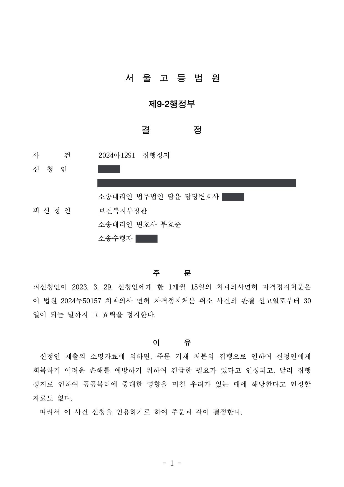

치과의사 면허자격정지처분 취소소송
서울행정법원 2023구합74260 · 서울고등법원 2024아1291 · 담당변호사 부효준
판결문


사건의 요지
치과의사가 배우자가 새로 개설한 의원에서 며칠간 기존 환자를 진료하였다는 이유로 받은 1개월 15일의 면허자격정지처분을 다툰 사건입니다. 구 의료법 제33조 제1항의 '환자의 요청'·'부득이한 사유' 예외에 해당하는지와 처분기준에 따른 양정의 재량권 일탈·남용 여부가 다투어졌고, 1심에서 원고의 청구가 받아들여지지 않았습니다.
사건의 주요 내용
원고는 2013년 7월부터 2018년 7월까지 치과의원을 개설·운영한 치과의사입니다. 원고는 치과의사인 배우자와 함께 인근에 새 치과의원을 열기로 하였고, 배우자가 2018년 6월 새 의원을 개설하였습니다. 원고는 2018년 6월 25일부터 30일까지 자신이 개설한 의원이 아닌 배우자의 새 의원에서 환자 18명을 진료하였다는 의료법 위반 피의사실로 2020년 1월 기소유예처분을 받았습니다.
처분청은 2023년 3월 원고가 의료기관 외에서 의료업을 하여 구 의료법 제33조 제1항을 위반하였다는 이유로, 같은 법 제66조 제1항 제10호와 의료관계 행정처분 규칙의 처분기준(자격정지 3개월, 기소유예를 받은 경우 2분의 1 범위에서 감경)에 따라 1개월 15일의 치과의사면허 자격정지처분을 하였습니다. 원고는 그 취소를 구하는 소를 제기하였고, 부효준 변호사는 처분청을 대리하였습니다.
1심은 2024년 6월 원고의 청구를 받아들이지 않았습니다. 원고가 항소하면서 신청한 집행정지에 대하여 항소심 법원은 2024년 7월 처분의 집행으로 회복하기 어려운 손해를 예방할 긴급한 필요가 인정된다며 항소심 판결 선고일부터 30일이 되는 날까지 처분의 효력을 정지하는 결정을 하였습니다.
쟁점
- 의원을 옮기는 과정에서 기존 환자들을 배우자가 개설한 새 의원에서 진료한 것이 구 의료법 제33조 제1항 제2호·제5호의 '환자의 요청에 따른 진료' 또는 '부득이한 사유가 있는 경우'에 해당하는지
- 처분기준에 기소유예 감경을 적용하여 정한 1개월 15일의 면허자격정지가 비례원칙에 반하여 재량권을 일탈·남용한 것인지
원고의 주장
- 진료에 필요한 장비를 새 의원으로 옮겨 기존 의원에서는 사실상 진료가 불가능한 상황에서, 기존 환자 중 시급히 진료가 필요한 일부 환자(18명)의 요구에 따라 부득이 새 의원에서 진료한 것이므로, 구 의료법 제33조 제1항 제2호('환자나 환자 보호자의 요청에 따라 진료하는 경우')와 제5호('환자가 있는 현장에서 진료를 하여야 하는 부득이한 사유가 있는 경우')의 예외에 해당하여 처분사유가 없다고 주장하였습니다.
- 기존 의원은 사실상 폐업한 상태에서 임대차보증금 반환 문제로 폐업신고만 7일 늦어진 것이고, 이전하기로 예정된 의원에서 진료하였으며, 검사도 사정을 참작하여 기소유예처분을 하였고, 자격정지로 상당한 경제적 손실과 병원 운영의 지장이 생기는 점에 비추어 처분은 재량권을 일탈·남용한 것이라고 주장하였습니다.
부효준 변호사의 주장
- 구 의료법 제33조 제1항 제2호의 '환자나 환자 보호자의 요청에 따라 진료하는 경우'는 특정 환자의 개별적·구체적 요청에 응한 진료를 뜻하고(대법원 2011. 4. 14. 선고 2010두26315 판결), 제2호·제5호의 예외는 진료의 필요성과 긴급성이 인정되는 경우로 한정하여 해석하여야 하는데, 새 의원에는 이미 배우자인 다른 치과의사가 장비를 갖추고 진료할 수 있었으므로 원고가 그곳에서 진료할 긴급한 필요가 없었다는 점을 밝혔습니다.
- 처분은 의료관계 행정처분 규칙의 처분기준(자격정지 3개월)에 기소유예에 따른 2분의 1 감경을 적용하여 이루어진 것으로 기준에 부합하고, 의료기관 외에서의 의료업을 금지하는 구 의료법 제33조 제1항의 취지(의료질서 문란과 국민 보건위생의 위험 방지)에 비추어 처분으로 달성하려는 공익이 원고의 불이익보다 크다고 주장하였습니다.
법원의 판단
법원은 구 의료법 제33조 제1항 제2호의 '환자나 환자 보호자의 요청에 따라 진료하는 경우'란 특정 환자에 대한 개별적이고 구체적인 요청에 응하여 이루어지는 진료를 뜻하고(대법원 2011. 4. 14. 선고 2010두26315 판결), 제2호·제5호는 환자가 있는 장소에서 진료할 필요가 있는 경우 등을 상정한 예외 규정이므로 진료의 필요성과 긴급성이 인정되는 경우로 한정하여 해석하여야 한다고 보았습니다. 그러면서 원고가 특정 환자의 개별적·구체적 요청에 따라 진료하였거나 긴급한 필요가 있었다고 인정하기 어렵고, 당시 새 의원에는 이미 자격을 갖춘 다른 의료인이 장비를 갖추고 있었으므로 예외에 해당하지 않는다고 하여 처분사유를 인정하였습니다.
재량권 일탈·남용에 관하여는 제재적 행정처분의 재량권 심사에 관한 대법원 판례(2007. 9. 20. 선고 2007두6946 판결 등)를 전제로, 구 의료법 제33조 제1항이 의료기관 안에서 의료업을 하도록 한 취지는 의료질서 문란과 국민 보건위생의 위험을 사전에 막으려는 것이고 그 위험은 추상적 위험으로 충분하며, 처분청이 처분기준(자격정지 3개월)에 기소유예에 따른 2분의 1 감경을 적용하여 1개월 15일의 자격정지를 한 것은 기준에 부합하고 현저히 부당하지 않으며, 의료질서 확립 등의 공익이 원고의 불이익보다 훨씬 크다고 보아 원고의 청구를 받아들이지 않았습니다.
항소심에서는 원고의 신청에 따라 처분의 효력을 항소심 판결 선고일부터 30일이 되는 날까지 정지하는 집행정지 결정이 내려졌습니다.
구 의료법 제33조 제1항 제2호가 정하고 있는 ‘환자나 환자 보호자의 요청에 따라 진료하는 경우’란 특정 환자에 대한 개별적이고 구체적인 요청에 응하여 이루어지는 진료를 의미하고(대법원 2011. 4. 14. 선고 2010두26315 판결 등 참조), 구 의료법 제33조 제1항 제2호, 제5호는 ‘환자의 진료에 필요한 기구, 장비 등을 구비하여 그 환자가 있는 장소 등에서 진료행위를 할 필요가 있는 경우’ 등을 상정하여 마련된 예외적인 규정이므로, 그와 같은 진료행위의 필요성 및 긴급성이 인정되는 경우로 한정하여 해석함이 타당하다.
서울행정법원 2023구합74260 판결 이유 '4. 가. 처분사유의 인정 여부 ②' 부분
원고가 주장하는 사정들 및 제출된 자료들만으로는 원고가 특정 환자의 개별적이고 구체적인 요청에 응하여 이 사건 의원에서 진료행위를 하였다거나 이 사건 의원에서 진료행위를 할 긴급한 필요가 있는 상황이었음을 인정하기 어려울 뿐만 아니라, 2018. 6. 25. 당시 이 사건 의원에는 이미 필요한 진료행위를 할 자격을 갖춘 다른 의료인(원고의 배우자)이 의료기구와 장비를 구비하고 있었던 것으로 보이는바, 설령 원고가 일부 환자의 요청에 응하여 이 사건 의원에서 진료행위를 하였다고 하더라도 구 의료법 제33조 제1항 제2호, 제5호가 정하고 있는 예외적인 경우에 해당한다고 보기도 어렵다.
서울행정법원 2023구합74260 판결 이유 '4. 가. 처분사유의 인정 여부 ③' 부분
제재적 행정처분이 사회통념상 재량권의 범위를 일탈하였거나 남용하였는지 여부는 처분사유로 된 위반행위의 내용과 당해 처분행위에 의하여 달성하려는 공익목적 및 이에 따르는 제반 사정 등을 객관적으로 심리하여 공익 침해의 정도와 그 처분으로 인하여 개인이 입게 될 불이익을 비교ㆍ형량하여 판단하여야 하고, 이 경우 제재적 행정처분의 기준이 부령의 형식으로 규정되어 있더라도 그것은 행정청 내부의 사무처리준칙을 규정한 것에 지나지 아니하여 대외적으로 국민이나 법원을 기속하는 효력이 없고, 당해 처분의 적법 여부는 위 처분기준만이 아니라 관계 법령의 규정 내용과 취지에 따라 판단되어야 하므로, 위 처분기준에 적합하다 하여 곧바로 당해 처분이 적법한 것이라고 할 수는 없는 것이지만, 위 처분기준이 그 자체로 헌법 또는 법률에 합치되지 아니하거나 위 처분기준에 따른 제재적 행정처분이 그 처분사유가 된 위반행위의 내용 및 관계 법령의 규정 내용과 취지에 비추어 현저히 부당하다고 인정할 만한 합리적인 이유가 없는 한 섣불리 그 처분이 재량권의 범위를 일탈하였거나 재량권을 남용한 것이라고 판단해서는 안 된다(대법원 2007. 9. 20. 선고 2007두6946 판결 등 참조).
서울행정법원 2023구합74260 판결 이유 '4. 나. 1) 관련 법리' 부분
※ 판결 이유 가운데 이 사건의 판단 기준이 된 부분을 그대로 옮긴 것으로, 당사자 이름 등은 가렸습니다.
이 사건이 보여 주는 것
의료인은 자신이 개설한 의료기관 안에서만 의료업을 할 수 있고, 개설 준비 중이거나 이전 예정인 다른 의료기관에서 기존 환자를 진료하는 것도 '환자의 요청'이나 '부득이한 사유'의 예외에 해당하지 않는 한 의료법 위반이 됩니다. 이 판결은 그 예외가 특정 환자의 개별적·구체적 요청과 진료의 긴급성이 있는 경우로 좁게 해석된다는 점과, 그 장소에서 이미 다른 의료인이 진료할 수 있었다면 긴급성이 인정되기 어렵다는 점을 보여 줍니다.
형사절차에서 기소유예를 받았더라도 행정처분은 별도로 이루어지며, 기소유예는 처분기준에 따른 감경 사유로 반영될 뿐 처분 자체를 면하게 하지는 않습니다. 의료기관을 옮기는 과정에서는 폐업·개설 신고 시점과 실제 진료 장소를 일치시키는 것이 중요합니다.
관련 법령구 의료법 제33조 제1항 제2호·제5호, 제66조 제1항 제10호, 제68조 · 의료관계 행정처분 규칙 제4조 [별표] 행정처분기준 1. 공통기준 라. 1), 2. 개별기준 가. 22)
관련 단어치과의사 면허면허자격정지의료법 제33조 제1항의료기관 외 의료업환자의 요청에 따른 진료기소유예 감경의료관계 행정처분 규칙재량권 일탈·남용집행정지 인용처분 적법
비슷한 처분을 받으셨다면
행정처분은 처분이 있음을 안 날부터 90일 이내에 행정심판이나 취소소송으로 다투어야 하고, 기간이 지나면 돌이킬 수 없는 처분은 집행정지를 서둘러야 합니다. 처분서를 받은 날짜부터 확인해 드립니다.